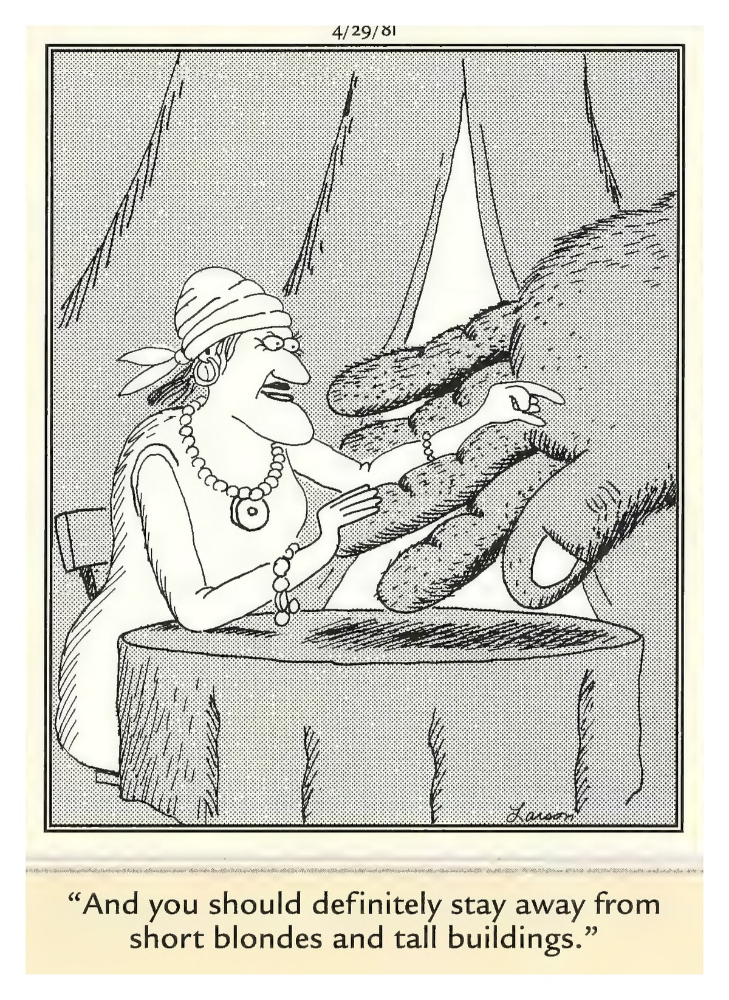

Your Daily Computer Brief
🔴 ALERT
That "Free" Download Is a Trap. You search for a cracked version of a paid program, a free game, or a tool to activate Windows. The first result promises exactly what you want. You download it, run the installer, and click through. Behind the scenes, that installer is silently adding multiple unwanted programs — some route your internet traffic through your computer, others enroll you in a distributed computing scheme, and some steal saved passwords from your browser. Microsoft Threat Intelligence warned on November 3, 2026: a widespread campaign uses trojanized installers (fake setup files) to deliver monetization payloads. The installers look legitimate — they use real Inno Setup technology — but each "offer" inside installs something you never agreed to. This isn't a one-time thing; the campaign evolves daily. What to do: Never download "cracked" software, activators, or free versions of paid programs. Get software only from the official website or the Microsoft Store. If you already ran a suspicious installer, run a full scan with Windows Security (built in, free) and change any passwords you saved in your browser. Source: Microsoft Security Blog — November 3, 2026
Today in Tech
- Microsoft's November Patch Tuesday fixes 1,235 security flaws, including one actively exploited zero-day in Outlook that steals login credentials when you open a malicious file. Update now. (Source: CrowdStrike — November 10, 2026)
- Windows 11 November update adds Cloud Rebuild recovery, redesigned right-click menus, and fixes for Remote Desktop and printing. Rollout is gradual — check Settings > Windows Update. (Source: TechRepublic — November 11, 2026)
- Windows 10 enters its second year of paid Extended Security Updates. The November patch (KB5131096) is the first of year two — only businesses enrolled in ESU receive it. Home users should upgrade. (Source: IT-Connect — November 2026)
Daily Tip
Hold your power button for 15 seconds until the screen goes black, wait a moment, then turn it back on. This clears memory leaks, stuck updates, and sluggish performance. Do it every Friday and your computer will stay snappy.
😄 COMEDY BREAK
